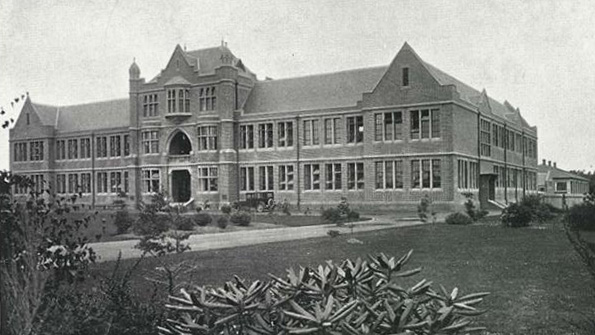

Rectors


1881 - 1885
G. W. Blanchflower
George William Blanchflower, B.A. (London), served as the first Headmaster of
Southland Boys’ High School from its founding in 1881 until 1885. Remembered for his respect towards
his pupils and his ability to earn theirs in return, he combined strict discipline with a genuine
compassion for their success and school spirit. While not imposing in stature, his professional
demeanour, academic regalia, and unwavering commitment to high standards reflected his responsibility
as a leader and mentor. Renowned for his incisive wit, he upheld honesty in scholarship, condemning
plagiarism and careless work, while encouraging perseverance through rigorous study and mutual
accountability. Mr Blanchflower also demonstrated service to the school community,
often granting early dismissals to support important matches and fostering unity among students.
After stepping down as Rector, Mr Blanchflower went on to hold posts in London and Jamaica, later teaching at the University of London.

1886 - 1893
A. H. Highton
Mr Highton, who served as Headmaster from the late 1880s until 1893, was respected by both staff and
pupils for his responsibility in leading the school and maintaining discipline. A tall and dignified
figure, he possessed deep knowledge of mathematics and science, excelling particularly in
experimental work, and through his service to the school he secured the addition of a science room
and chemical laboratory in 1889. Although shy and reserved, he treated others with respect and was
known for his compassion, offering personal assistance with science and mathematics to former
students. He upheld honesty in conduct, delivering stern public rebukes when behaviour fell short,
while remaining the perfect gentleman both in and out of school. His dedication to fostering learning,
even beyond students’ formal schooling, demonstrated perseverance in supporting their intellectual growth.
After his resignation in 1893, he pursued business in Underwood and later Victoria.

1893 - 1903
H. L. Fowler
Mr Fowler was known for his unwavering responsibility and dedication to thorough, high-quality teaching. A specialist in the classics, English, and modern languages, his scholarship was unquestioned, and his ability to explain complex ideas clearly contributed significantly to student understanding. As a disciplinarian, he exemplified honesty and respect, applying rules with fairness and emotional restraint, earning lasting admiration from former pupils. His punishments were perceived not as acts of anger but as natural consequences of wrongdoing, reflecting a deep sense of justice and compassion in his leadership. Mr Fowler’s perseverance in maintaining high standards and consistent discipline without harshness made him a role model for both staff and students. His advancement to the role of principal at Nelson Boys’ College in 1904 and his continued service until retirement in 1921 further demonstrated a life committed to service in education and the enduring values of integrity and fairness.